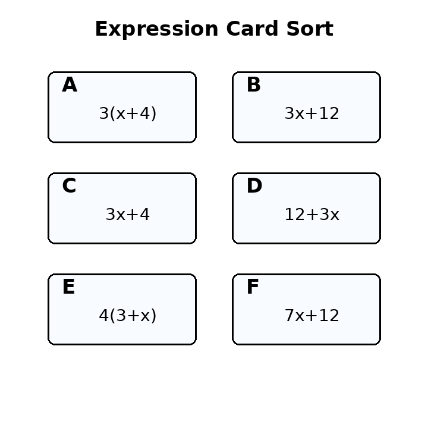
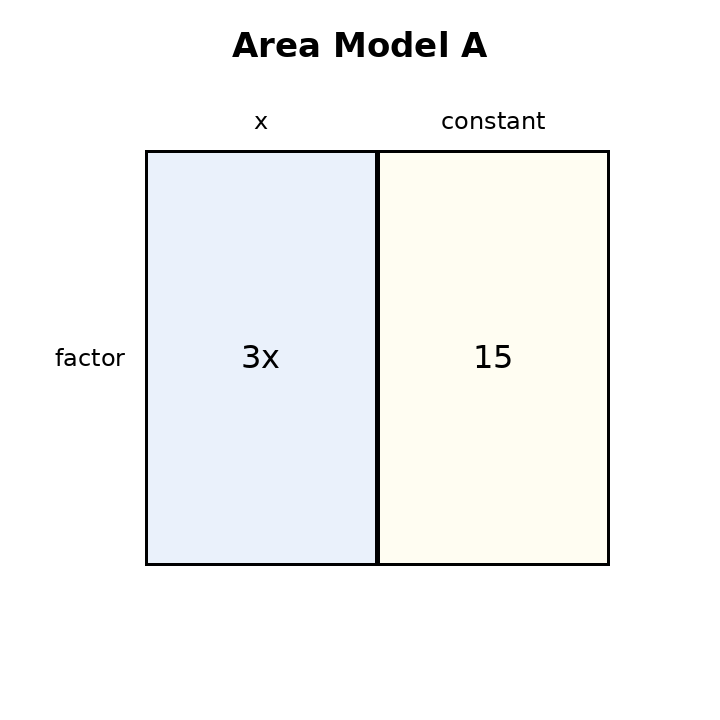
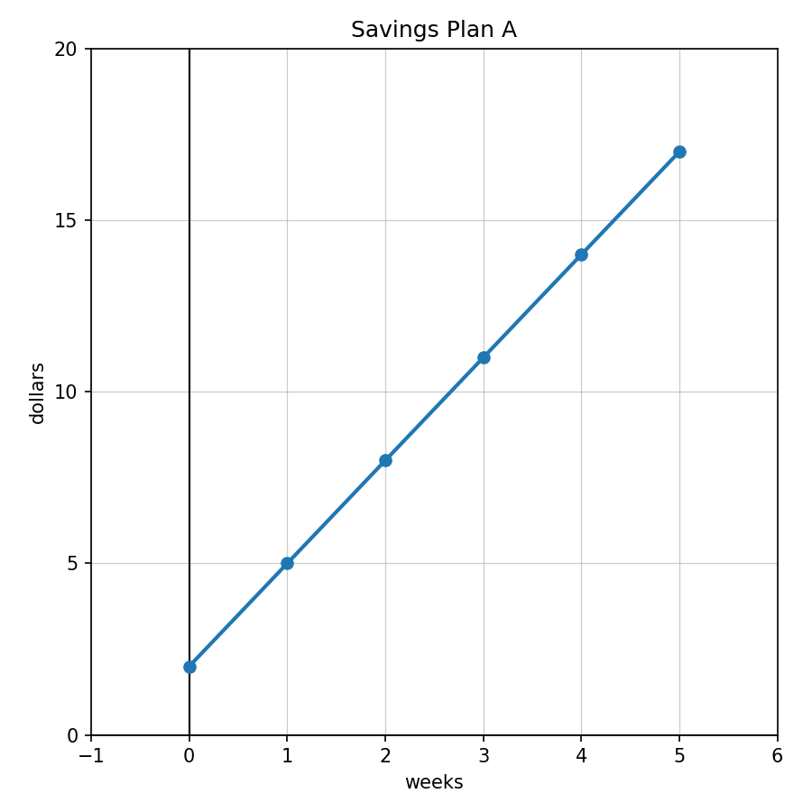

For the expression $8x+3$, identify the coefficient, variable, and constant term.
Which expressions are equivalent to $3(x+4)$? Use the card sort.

Write an expression represented by Area Model A. Then rewrite it in expanded form.

A theater charges $6$ dollars per student plus a $25$ setup fee. Write two equivalent expressions for the total cost for $s$ students and explain what each part represents.
Solve: $$x+9=22$$
Solve: $$7n=42$$
Check whether $x=6$ is a solution to $4x-5=19$.
Write an equation for: A number decreased by $8$ is $17$.
Solve and verify: $$3x+4=25$$
Solve: $$2(x+5)=28$$
A student solves $5x+3=28$ and writes $5x=31$, so $x=6.2$. Identify the error and solve correctly.
Create a real-world situation represented by $4x+12=36$. Solve it and explain what the solution means.
For $y=5x+7$, identify the starting value and constant change.
Complete the table for $y=2x+3$.
| $x$ | 0 | 1 | 2 | 3 |
|---|---|---|---|---|
| $y$ |
Write a rule for the table.
| $x$ | 0 | 1 | 2 | 3 |
|---|---|---|---|---|
| $y$ | 4 | 7 | 10 | 13 |
Use Savings Plan A. Write a sentence describing the starting amount and weekly change.
